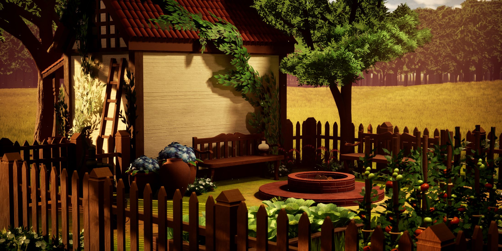
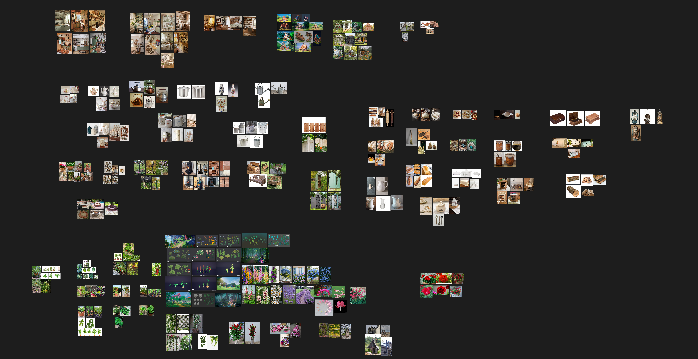
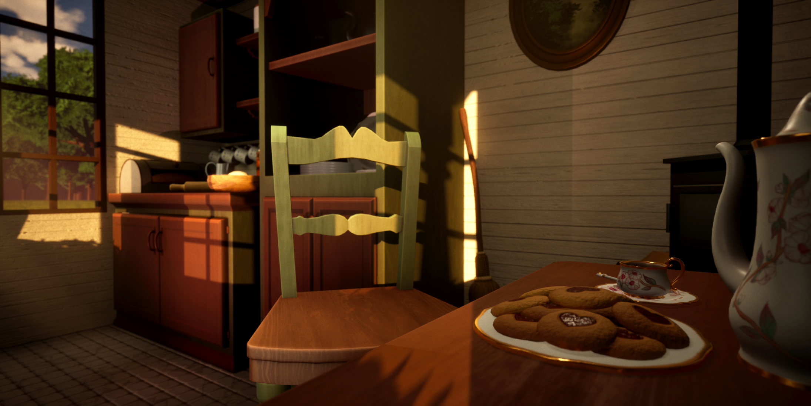
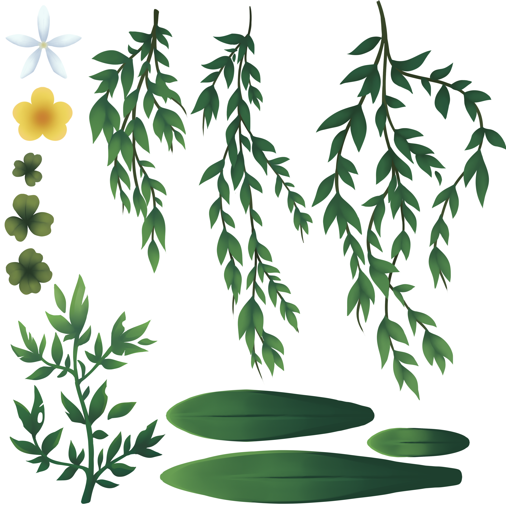
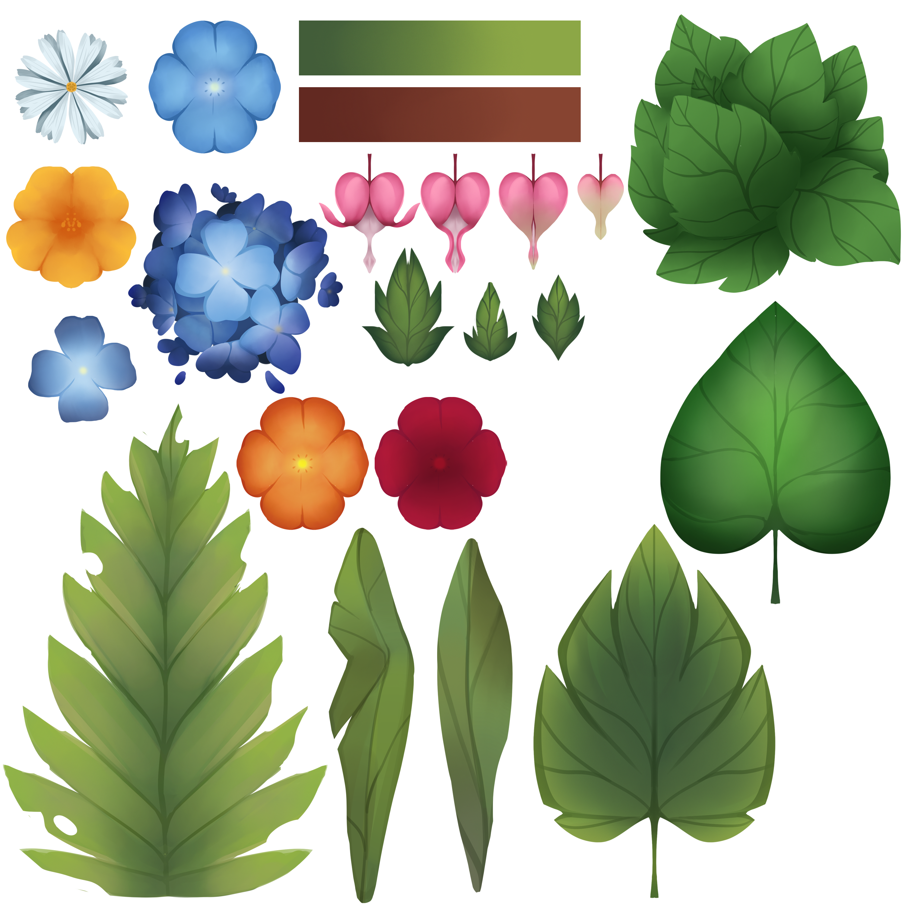
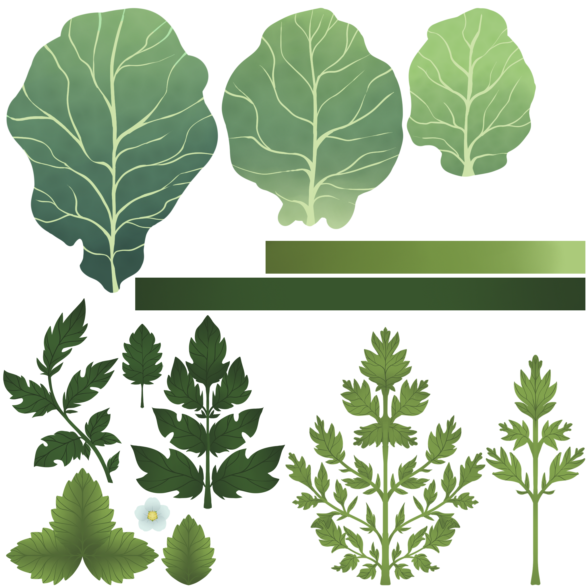
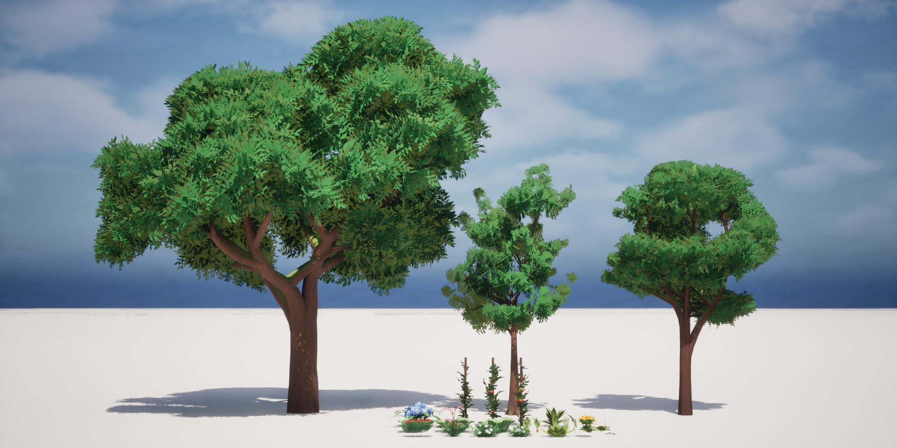
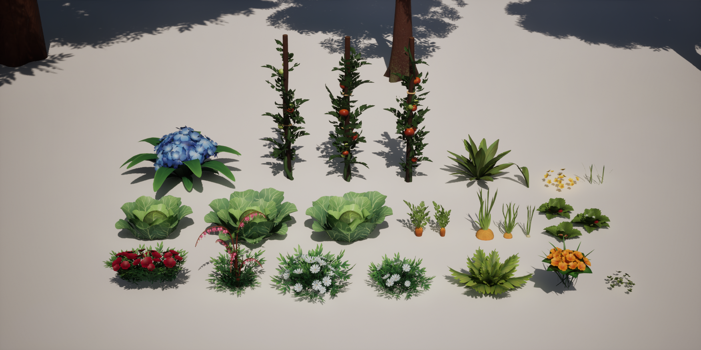

Reference & Direction
Lonely Cottage is a game-ready environment created from an
original concept. My goal was to create a comfortable atmosphere,
combining realism with slight stylization to create a dream-like
effect. I was responsible for the entire environment pipeline,
including modeling, foliage, texturing, and final assembly in
Unreal Engine.

I gathered realistic references for the architecture, vegetation,
and props, alongside stylized environment references for the
atmosphere.

Blockout & Composition
I established the main proportions of the house during the
blockout, along with the scale and composition. While blocking
out the environment, I noticed the scene was missing some
elements and decided to add a garden.
Asset Creation
I distributed the topology accordingly to each asset's silhouette
where needed to maintain its shape, while simpler hard-surface
assets were kept low-poly.



Foliage
I created the foliage using double-sided planes and custom texture
atlases. Each vegetation group originally used a separate atlas
map. Looking at the project today, I would change this into a
shared atlas map to reduce material usage and simplify the setup.



Trees were created using TreeIt with a custom leaf texture made in
Photoshop. Fruit and vegetable assets were modeled and textured
separately. In my current workflow, I would place these materials
in one shared material to reduce material complexity.

